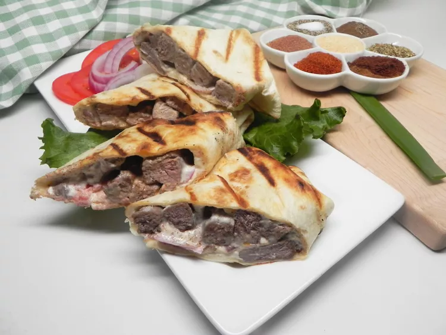

Beef Shawarma

Description
This famous Middle Eastern street food is basically heavily-marinated meat (or chicken), layered on a vertical rotisserie or spit where it is slow-roasted for days until perfectly tender and extra flavorful! To serve it, thin layers of meat are shaved off the spit and piled up into a warm pita pocket with heaps of fresh toppings and a good drizzle of tahini sauce.
You do not need a special rotisserie or spit to make it at home. In this easy homemade shawarma recipe, you just need a large skillet or cast iron grill pan. And to make sure we get as close as possible to the texture and authentic flavor of beef shawarma, slice up your meat very thinly and toss it in the tantalizing shawarma seasoning with a bit of garlic, onions, lemon juice and olive oil.
Ingredients
Shawarma
-
1 tablespoon olive oil
-
1 pound beef top sirloin, thinly sliced
-
1 tablespoon shawarma seasoning
-
1 teaspoon ground allspice
-
1/2 teaspoon salt
Tahini Sauce
-
1/2 cup tahini
-
3 tablespoons plain yogurt
-
1/2 lemon, juiced
-
1/2 teaspoon salt
-
1 (10 ounce) package large flour tortillas
-
2 tomatoes, halved and sliced
-
1 onion, thinly sliced
Steps
-
Heat olive oil in a large skillet over medium heat. Add beef, shawarma seasoning, allspice, and 1/2 teaspoon salt; cook, turning occasionally, until beef is browned and tender, 3 to 5 minutes.
-
Whisk tahini, yogurt, lemon juice, and 1/2 teaspoon salt together in a small bowl until creamy.
-
Spread 1 to 2 tablespoons tahini sauce in the center of each tortilla. Divide beef slices, tomato slices, and onion slices evenly among tortillas. Roll up tortillas.
-
Preheat a panini press according to manufacturer's instructions. Press rolled tortillas seam side-down until grill marks appear, about 2 minutes. Cut each tortilla into 4 to 5 pieces.
Home